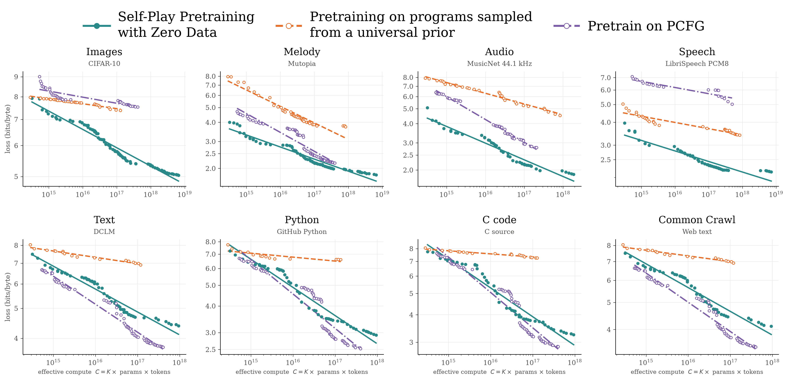
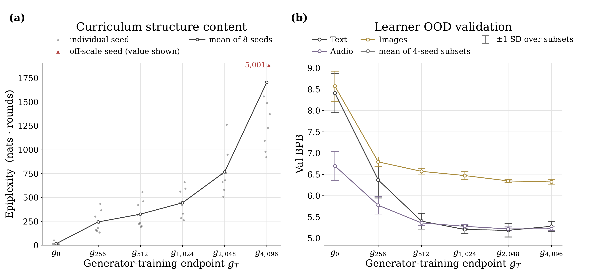
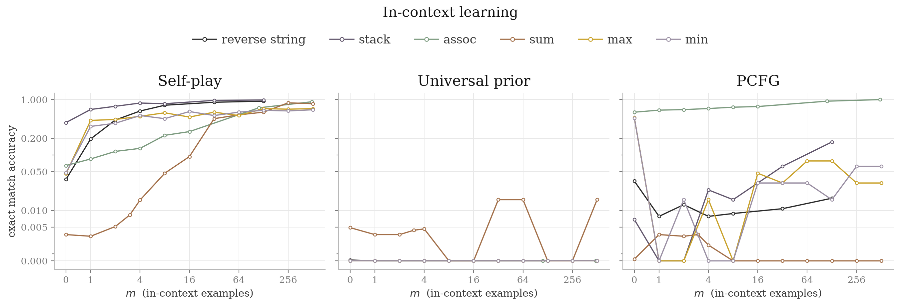
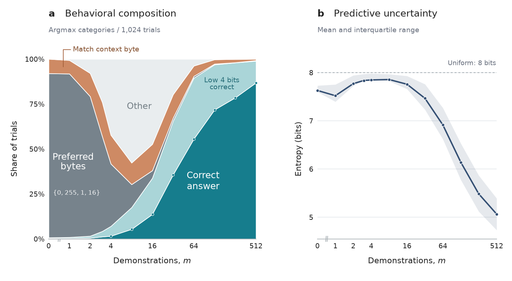
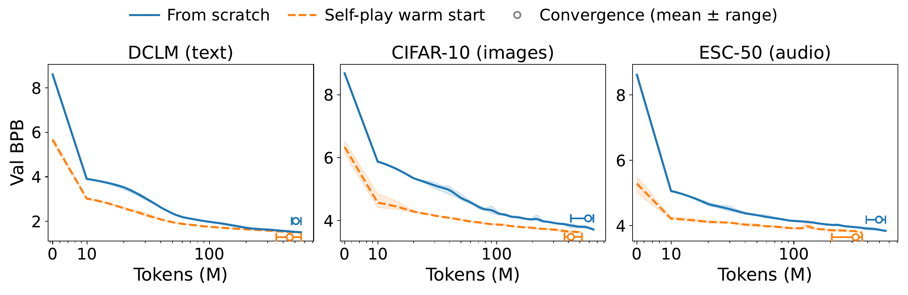

Executive summary
The paper separates structure from facts
Modern pretraining scales by feeding models more curated natural data. This paper asks a deliberately extreme question: can useful pretraining happen when neither the learner nor the data generator has ever seen text, images, speech, code, or any other natural dataset? The authors initialize two small transformers from scratch. One writes programs for a minimal universal Turing machine. Executing those programs produces byte sequences. The other model learns to predict those bytes.
The generator is not rewarded for making examples merely hard. Random noise is hard but useless. Instead, it receives a learning-progress signal: candidate gradients are valuable when they align with the learner's recent parameter movement under an AdamW-derived preconditioner. This pushes the generator toward examples that are not yet mastered but are still connected to structure the learner can absorb.
The resulting learners improve predictably on unseen natural data as self-play compute increases. They also develop in-context learning and discover recognizable mathematical sequences. That is meaningful evidence that some reusable predictive regularities can be generated from computation alone. It is not evidence that a model can invent historical facts, scientific observations, or knowledge of our world without encountering that world.
- Self-play changes data selection. The key comparison is against programs sampled from the same fixed universal prior. Adaptation scales much better.
- The reward targets learnable novelty. It tries to avoid both already-mastered examples and arbitrary noise.
- Transfer spans modalities. Zero-shot loss falls on text, images, melody, audio, speech, and code even though none was used for gradient updates.
- In-context learning emerges. The self-play learner infers held-out transformations from demonstrations, unlike the fixed universal-prior baseline.
- The practical near-term use is warm-starting. Self-play initialization reduced the natural-data tokens needed to reach comparable losses in the reported small-model tests.
YouTube exposes no public caption track for this video. This is therefore not a transcript and does not attribute unsupported remarks to the presenter. The technical summary is grounded in the linked paper, official figure repository, evaluation code, and released learner checkpoints. The experiments use models below 25 million parameters with a 4K context, so claims about frontier-scale pretraining remain untested.
The central distinction
Universal structure is not contingent information
Universal predictive structure
Reusable regularities such as copying, iteration, recursion, composition, periodicity, and learning a rule from examples. These can appear across very different data-generating processes.
Contingent information
Facts specific to the world or dataset: who won an election, the appearance of a city, a company's revenue, or the wording of a document. This must enter through observation or data.
The paper's hypothesis is that ordinary natural-data pretraining teaches both resources at once. A model learns facts and surface patterns, but it also learns broadly reusable ways that sequences are structured. Self-play holds contingent information near zero and asks whether compute can grow the universal component by searching across program-generated data.
This framing makes the phrase "zero data" precise but easy to misread. There is no external natural training corpus. There is still a stream of synthetic training sequences, a hand-chosen universal machine, a byte vocabulary, optimization algorithms, compute, and natural-data validation used for some hyperparameter selection. It is zero natural training data, not zero inductive bias or zero information in the system design.
How the method works
A generator and learner co-evolve through executable data
Both models are decoder-only Llama-style transformers with the same architecture but separate parameters. Programs use a Brainf*ck-like Turing-complete language. Its small instruction set manipulates a byte-valued tape, loops, reads input, and emits output. The execution semantics make every generated string valid and bound its runtime, avoiding a syntax-failure cliff in the search space.
The learner never sees the program itself. It sees only the output bytes and performs standard autoregressive next-byte prediction over a 256-value vocabulary. This common byte interface lets the same model be evaluated on UTF-8 text, raw image bytes, audio, code, DNA, and other modalities without a modality-specific tokenizer.
The technical center
Difficulty alone rewards noise; progress needs direction
A naive curriculum could reward whatever the learner predicts poorly. That immediately creates a degenerate strategy: emit unpredictable random bytes. The loss is high, but no reusable regularity is available to learn. The authors instead compare the gradient induced by a candidate sequence with the direction the learner's parameters have moved over a growing lookback window.
In plain language, a sequence receives high reward when it asks the learner to continue moving in a direction that recent learning has already made useful, while still producing a substantial gradient. Mastered content has almost no gradient. Unrelated noise points in an unhelpful direction. Material at the frontier can be both challenging and aligned.
The score uses an AdamW-derived diagonal preconditioner and is computed with forward-mode automatic differentiation to avoid materializing full gradients. The generator then receives a KL-regularized, GRPO-style policy-gradient update. A second reward-weighted supervised objective distills successful programs back into the generator to reduce forgetting.
Fresh samples
Explore globally under the current generator policy.
Mutations
Search locally around programs that already earned reward.
Replay
Preserve useful structures discovered in earlier rounds.
Expert iteration
Imitate high-reward programs so the generator retains them.
Gradient alignment is a plausible proxy for learnable novelty, not a proof that each rewarded program teaches transferable structure. The paper reports that this reward was selected after small-scale exploration among alternatives. That makes reward ablations and independent replication especially important.
Result 1 · Zero-shot transfer
Natural-data loss falls predictably with self-play compute
The evaluation builds compute-optimal frontiers across model sizes, training checkpoints, and ensemble sizes. Loss is measured in bits per byte, and the authors fit an asymptotic power law to each held-out dataset. The important pattern is not one absolute score. It is that more self-play compute produces smooth, predictable improvement across unrelated modalities without gradient updates on those datasets.

Two baselines sharpen the conclusion. A fixed Solomonoff-style prior samples the same universal program space but does not adapt to the learner; it improves much more slowly. This supports the value of the learned curriculum rather than universality alone. A probabilistic context-free grammar provides specialized hierarchical structure and performs especially well on text and code. That result prevents an overbroad claim: the self-play prior is more general, but a well-matched hand-designed prior can still win in its domain.
Result 2 · Curriculum quality
Later generators produce richer, more transferable data
Falling validation loss alone could hide a narrow or repetitive curriculum. The authors therefore freeze corpora sampled from generator checkpoints at different training endpoints and train fresh 1M-parameter learners on them. Later curricula have higher epiplexity, a measure of structured information extractable by a compute-bounded learner, and produce lower out-of-distribution loss on held-out text, images, and audio.

The discovered programs also become qualitatively recognizable. Self-play finds arithmetic, geometric, Fibonacci-like, quadratic, and cubic sequences modulo 256. A large fixed-prior sampling run found arithmetic sequences but none of the other four families.
| Sequence family | Example output | Earliest saved self-play round | Expected fixed-prior round |
|---|---|---|---|
| Arithmetic | 1, 3, 5, 7, 9, ... | 0 | About 105 |
| Geometric | 1, 3, 9, 27, 81, ... | 256 | More than 53,000 |
| Fibonacci-like | 1, 1, 2, 3, 5, ... | 512 | More than 53,000 |
| Quadratic | Constant second difference | 512 | More than 53,000 |
| Cubic | Constant third difference | 512 | More than 53,000 |
This is evidence that adaptation finds rare structured programs efficiently. It does not show that these particular mathematical families cause the natural-data transfer. The authors explicitly leave that causal question to future circuit analysis and curriculum ablations.
Result 3 · In-context learning
The learner infers new rules from examples
The models are evaluated on six held-out tasks: reversing a string, stack behavior, associative recall, summation, maximum, and minimum. No fine-tuning occurs. The model receives several input-output demonstrations in context and must infer the rule for the next example.

The summation task offers a useful window into how a strategy forms. Initially the model emits frequent prior tokens. After a few examples it tries copying, then becomes less confident as that hypothesis fails. Around four examples it begins handling the low four bits correctly; around eight it starts handling the high bits. Confidence rises only after the correct algorithmic behavior stabilizes.

Practical result · Pre-pretraining
Self-play is more plausible as a warm start than a replacement
The most operational experiment initializes a 24.4M-parameter model either from random weights or from the final self-play learner, then trains both normally on DCLM text, CIFAR-10 images, or ESC-50 audio. The warm-start arm reaches each loss level earlier. The advantage narrows near convergence, which suggests faster acquisition rather than a permanently different endpoint.

This is promising but economically incomplete. Self-play is a one-time initialization that could be reused across domains, so excluding its cost can be defensible for a heavily reused checkpoint. It still prevents the chart from proving lower total compute for a single downstream run. A production decision would need the full amortization model: self-play cost, checkpoint reuse count, natural-data savings, wall-clock constraints, and final quality.
How the authors interpret scaling
A useful ansatz, not a demonstrated law of nature
The paper extends the familiar model-and-data scaling equation by splitting effective data into contingent information and universal structure. During self-play, the contingent term stays fixed while the supply of universal structure can grow with training time. If that growth follows a power law, natural-data validation loss can also follow a power law even though the model never trains on natural data.
The authors compare fitted self-play exponents with values reported for ordinary natural-data training and cautiously suggest that universal structure may explain an important part of standard scaling. This is an interpretation layered over the empirical curves. Similar exponents do not prove identical mechanisms, equal data efficiency, or equivalent final losses. The fitted asymptote can also absorb the missing contingent knowledge.
Critical reading
What remains uncertain
Scale is untested
Every model is below 25M parameters. Larger systems may need a richer programming language, reusable abstractions, and a more efficient search process.
Validation influences selection
DCLM and DNA validation loss help select hyperparameters. Natural data never supplies gradients, but it is not absent from every research decision.
The reward was selected empirically
Several reward candidates were explored at small scale. More independent ablation and replication are needed to establish robustness.
Transfer is measured as prediction loss
Lower bits-per-byte and synthetic ICL are meaningful, but they do not demonstrate factual knowledge, reasoning quality, or useful language generation at product scale.
Warm-start economics are partial
Natural-data token savings exclude the compute needed to produce the self-play checkpoint. Reuse determines whether the investment pays back.
Causality is open
Mathematical sequences are a vivid signal of curriculum structure, but the paper does not prove that they cause cross-modal transfer or ICL.
One result deserves special caution: the reported DNA scaling exponent is exceptional relative to the literature values the paper compares against, and DNA is also one of the two validation domains used for hyperparameter selection. That does not negate the broader transfer result, but it makes the DNA curve less persuasive as independent confirmation.
Implications for AI engineers
The reusable idea is adaptive curriculum design
Optimize for learning progress
Hardness alone selects noise. Curriculum systems need signals that distinguish unresolved but learnable structure from irreducible uncertainty.
Use executable generators
Programs provide cheap, exact, diverse supervision and make every generated example traceable to a data-producing process.
Keep adaptive and fixed baselines
Comparing against the same search space without adaptation is what shows that the curriculum policy adds value.
Measure transfer, not self-reward
A generator can game its intrinsic objective. Held-out domains and fresh learners test whether its curriculum remains useful outside the loop.
Separate structure from knowledge
Synthetic experience may teach procedures and abstractions; real-world facts still require trusted observation and data governance.
Account for total compute
A warm start is valuable only when downstream savings and reuse exceed the cost of creating, validating, and storing it.
For an agentic platform, the closest analogy is not letting an agent freely invent SOPs. It is building a governed environment where agents can generate executable practice tasks, receive objective feedback, retain productive strategies, and advance to harder cases as competence improves. Business facts and policy still come from approved sources; self-play supplies structured experience around them.
Bottom line
A strong proof of concept with a deliberately narrow claim
The paper convincingly shows that an adaptive generator can discover synthetic structures that train a small learner better than fixed sampling from the same universal program space. The cross-modal scaling, fresh-learner curriculum test, ICL behavior, and warm-start experiment reinforce one another.
Its most important contribution is conceptual: data has at least two jobs. It tells a model about the world, and it teaches general ways to predict structured sequences. Self-play cannot replace the first job. This work suggests that compute may produce more of the second, and that an adaptive curriculum can make that process substantially more efficient than blind sampling.
Sources and reproducibility
What this article is based on
- Zero Data Self Play Pretraining, the 1:31:27 source video by hu-po. No public YouTube caption track was available at the time of this summary.
- Self-Play Pretraining with Zero Data, the primary paper by Aditya Cowsik, Kfir Dolev, Michael Y. Li, G. Bruno De Luca, Nourya Cohen, Noah D. Goodman, and Yoav Levine.
- Official figure and evaluation repository, containing published plots, underlying plot data, benchmark preparation, and checkpoint scoring code.
- Released learner checkpoints, including self-play, fixed-prior, reward-ablation, and curriculum arms. Generator weights, optimizer state, and full training code are not included.
Figures are reproduced from the authors' arXiv HTML and official repository at their published resolution. This article is a source-grounded synthesis, not an independent training replication or a verbatim account of the video.